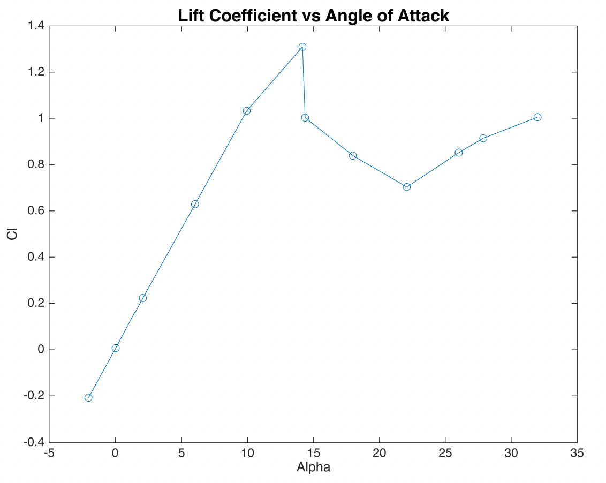
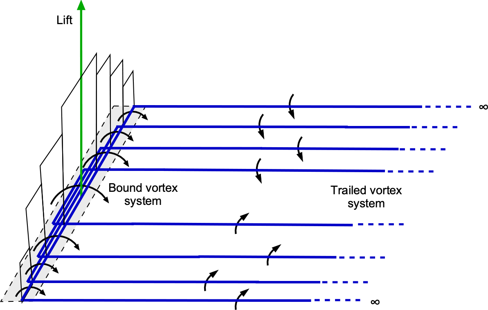
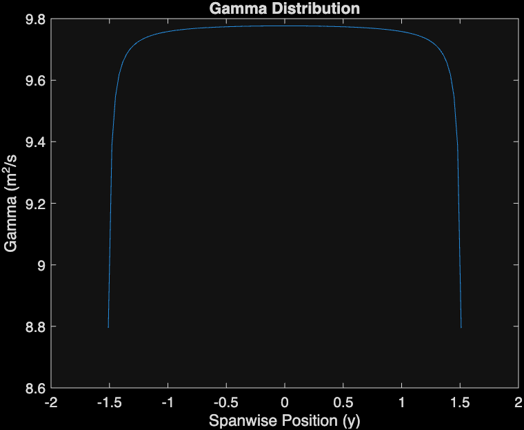
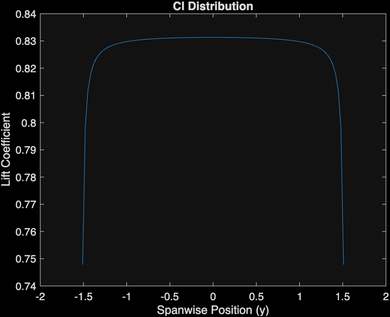
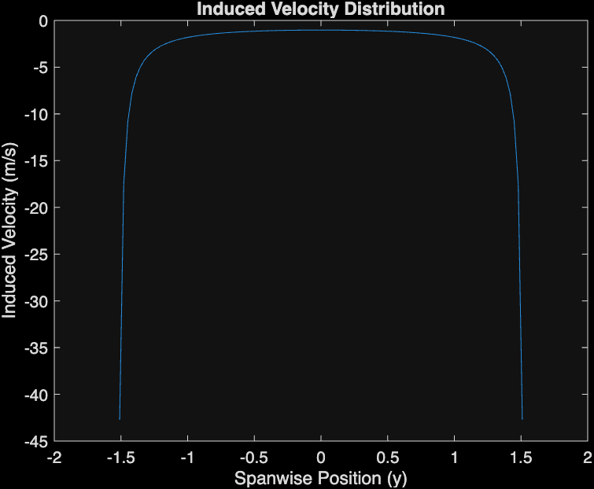
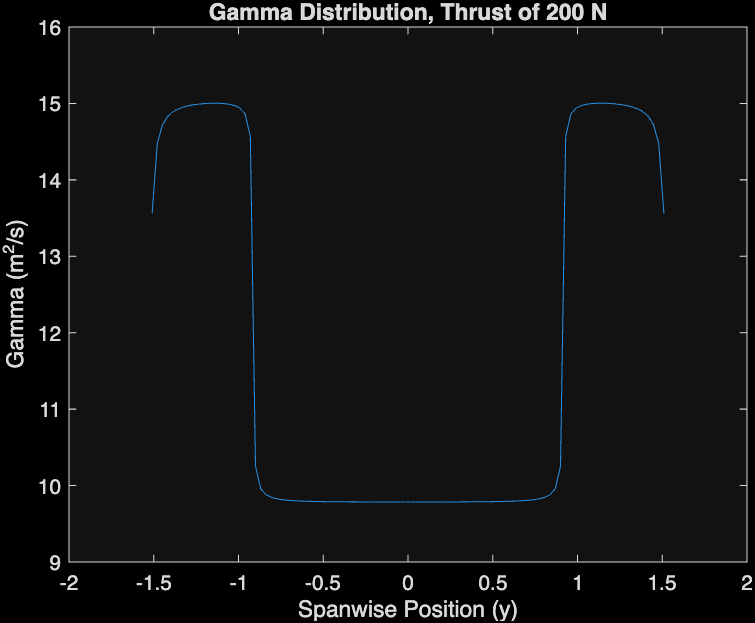
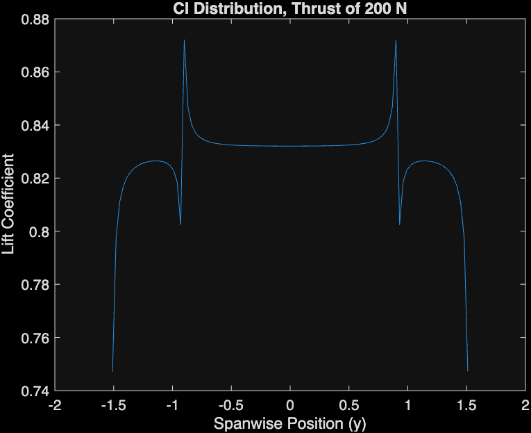
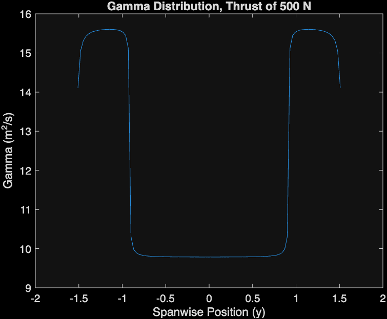
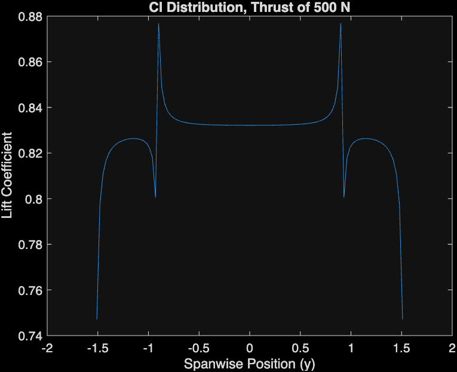
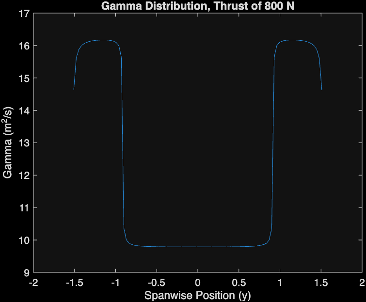

Dual-Propeller Wing Performance Analysis
The Problem
During the preliminary design phase of a small UAV, the team developed a design featuring a wing with two thrusting propellers (1.22 m (4 ft) diameter) at the wing tips, designed to operate at 51.44 m/s (100 knots) and an angle of attack of 8 degrees. A technical leader raised concerns about the wing's overall performance, in particular the effect of propeller-on-wing interference on lift distribution and stall characteristics.
The Solution
A numerical lifting line analysis was implemented to better understand the performance of the wing with and without the effect of the propellers. The analysis discretized the wing into 100 horseshoe vortices (panels) and used NACA 0012 airfoil $C_l$ vs. $\alpha$ data to understand at what effective angle of attack the wing starts to stall. The analysis also examined how local wing $C_l$ distribution changes as a function of angle of attack and propeller thrust.
Wing Geometry & Operating Conditions
- Wing Span: 3.05 m (10 ft)
- Chord Length: 0.4572 m (1.5 ft)
- Aspect Ratio: 6.67
- Airfoil: NACA 0012
- Operating Speed: 51.44 m/s (100 knots)
- Design Angle of Attack: 8°
- Propeller Diameter: 1.22 m (4 ft)
- Propeller Radius: 0.6096 m (2 ft)
- Altitude: 10,668 m (35,000 ft, density: 0.364 kg/m³)
NACA 0012 Airfoil Data

The analysis uses experimental NACA 0012 airfoil data at $Re = 1.8 \times 10^6$ (from NACA Technical Note 3361). Rather than using the thin airfoil assumption, the lift coefficient is interpolated from tabulated experimental data that includes stall effects. This approach allows the model to capture realistic airfoil behavior across the entire operating range, including the critical stall region.
Source: Critzos, C. C., Heyson, H. H., & Boswinkle, R. W. (1955). Aerodynamic Characteristics of NACA 0012 Airfoil Section at Angles of Attack from 0° to 180°. NACA Technical Note 3361. Langley Aeronautical Laboratory.
Methods
Discretization of the Wing

The wing is idealized as a collection of overlapping horseshoe vortices. Each horseshoe has a "bound" vortex at the wings leading edge and two "trail" vertices extending downstream. These vorticies create a stepwise circulation distribution along the wing span.
The numerical analysis calculates the effect of all each trailing vortex on a series of collocation points to determine the induced velocity or downwash. The induced velocity is then used to find the effective angle of attack at each location and the lift coefficient of the wing.
Boundary Conditions
- Trailing vortex at wing root: $\Gamma_t = \Gamma_1$ (first panel circulation)
- Trailing vortex at wing tip: $\Gamma_t = -\Gamma_N$ (last panel circulation, negative)
- Intermediate trailing vortices: $\Gamma_t = \Gamma_i - \Gamma_{i-1}$
Numerical Implementation
An iterative process is used to solve for the circulation and induced velocity distribution:
- Initialization: Start with zero induced velocity assumption and calculate initial circulation from geometric angle of attack:
$$\Gamma = \frac{C_l V_{\infty} c}{2}$$
- Trailing Vortex Calculation: Compute trailing vortex strength as the difference in bound circulation between adjacent panels:
$$\Gamma_{t,i} = \Gamma_i - \Gamma_{i-1}$$
- Induced Velocity: Calculate induced velocity at each panel collocation point using Biot-Savart law for all trailing vortices:
$$w_i = \sum_{j=1}^{N} \frac{\Gamma_{t,j}}{4\pi r}$$
- Effective Angle of Attack: Update effective angle of attack accounting for induced downwash:
$$\alpha_i = -\frac{v_i}{V_{\infty}} \cdot \frac{\pi}{180}, \quad \alpha_{\text{eff}} = \alpha_g - \alpha_i$$
- Lift Coefficient: Interpolate airfoil $C_l$ from NACA 0012 data based on effective angle of attack:
$$C_l = f(\alpha_{\text{eff}})$$
- Circulation Update: Calculate new bound circulation:
$$\Gamma = \frac{C_l V_{\infty} c}{2}$$
- Convergence Check: Iterate until circulation distribution converges to within 0.05% of the previous iteration:
$$\left|\frac{\Gamma^{n+1} - \Gamma^n}{\Gamma^n}\right| < 0.0005$$
Propeller Wake Velocity Calculation
Propeller slipstream creates an accelerated flow region behind the propeller disk. The wake is assumed to be uniformly distributed in a cylinder behind the propeller, affecting the portion of the wing within the wake region (within 0.914 m (3 ft) of each wing tip).
$$
\frac{v_i}{v_h} = -\left(\frac{V_{\infty}}{2v_h}\right) + \sqrt{\left(\frac{V_{\infty}}{2v_h}\right)^2 + 1}
$$
$$
v_h = \sqrt{\frac{T}{2\rho\pi R^2}}
$$
| Variable |
Description |
Units |
| vi |
Propeller wake velocity |
m/s |
| vh |
Hover velocity (characteristic velocity) |
m/s |
| V∞ |
Freestream velocity |
m/s |
| T |
Propeller thrust |
N |
| ρ |
Air density |
kg/m³ |
| R |
Rotor radius |
m |
The total velocity seen by wing panels in the propeller wake is: $V_{\text{total}} = v_i + V_{\infty}$
Results
Wing Performance Without Propellers
The baseline analysis examines wing performance without propeller effects at the design angle of attack of $8°$.
Circulation, Lift, and Induced Velocity Distributions
The induced velocity distribution shows negative velocity values across the entire wing span, with the magnitude increasing towards the wing edges (tips). This behavior is physically consistent with the three-dimensional flow effects:
- Induced velocity represents the downwash caused by trailing vortices
- The negative values indicate downward flow (downwash) that reduces the effective angle of attack
- The increasing magnitude towards the wing tips reflects the stronger vortex effects at the wing edges, where air "creeps around" the edges towards the low-pressure region on top of the wing
- The overall $C_l$ value of the no-propeller case is .8269, which is consistent with the experimental data from NACA Technical Note 3361.

Circulation (Γ) Distribution

Lift Coefficient (C_l) Distribution

Induced Velocity Distribution
Wing Performance With Propellers
When propellers are attached to either end of the wing, the analysis accounts for the increased wake velocity behind each propeller. The wake is assumed to be uniformly distributed in a cylinder behind the propeller, creating a region of accelerated flow that affects wing sections within the propeller wake.
Effect of Varying Propeller Thrust
To understand how propeller thrust affects wing performance, the analysis was conducted at three thrust levels: $200 \text{ N}$, $500 \text{ N}$, and $800 \text{ N}$ per propeller.
Circulation (Gamma) Distribution
- Center Wing Behavior: The gamma values in the middle portion of the wing remain largely unchanged across all thrust levels, staying constant at approximately $9.8 \text{ m}^2/\text{s}$
- Propeller Region Effects: As thrust increases, there is a corresponding increase in gamma at the portions of the wing covered by the propeller wake
- Physical Explanation: Higher thrust leads to greater wake velocity, which in turn produces greater circulation in the affected wing sections
Lift Coefficient ($C_l$) Distribution
- Center Portion: The $C_l$ values in the center portion of the wing are similar to those observed in the no-propeller case
- Propeller Regions: Surprisingly, the regions covered by the propellers (experiencing increased flow velocity) have smaller $C_l$ values than the middle portions of the wing
- Thrust Independence: Increasing thrust from $200 \text{ N}$ to $800 \text{ N}$ has minimal effect on the $C_l$ distribution, with the graphs remaining relatively constant across all cases. The overall $C_l$ values of the propeller analysis were .8278, .8279, and .8281. Suprinsingly, they are only marginally different than the no-propeller case (.8269).
200 N Thrust per Propeller

Circulation (Γ) Distribution

Lift Coefficient (C_l) Distribution
500 N Thrust per Propeller

Circulation (Γ) Distribution

Lift Coefficient (C_l) Distribution
800 N Thrust per Propeller

Circulation (Γ) Distribution
Lift Coefficient (C_l) Distribution
Key Findings & Physical Interpretation
Understanding the Counterintuitive Result
The observation that propeller regions have smaller $C_l$ values despite increased flow velocity may seem counterintuitive. However, this can be explained by examining the relationship between lift coefficient, circulation, and freestream velocity:
$$
C_l = \frac{\Gamma}{\frac{1}{2}\rho V_{\infty} c}
$$
For constant density ($\rho$) and chord length ($c$), this simplifies to:
$$
C_l \propto \frac{\Gamma}{V_{\infty}}
$$
Physical Explanation: Although increasing propeller thrust produces larger circulation ($\Gamma$) at the wing edges, it also increases the freestream velocity ($V_{\infty}$) by an even greater degree. Since $C_l$ is proportional to the ratio $\Gamma/V_{\infty}$, the net effect is a reduction in $C_l$ in the propeller-affected regions compared to the center of the wing.
Conclusions
- For both non-propeller and propeller cases, $C_l$ vs. effective AOA maintains a linear relationship until reaching the stall point at approximately $13.75°$ for the NACA 0012 airfoil
- Propellers lead to increased circulation in the portions of the wing they cover, but this is accompanied by proportionally greater increases in freestream velocity
- The net result is marginally smaller $C_l$ values in propeller-affected regions compared to the center wing sections
- The $C_l$ distribution remains relatively insensitive to changes in propeller thrust level
Technologies & Tools
Finite Wing Analysis
Lifting Line Theory
Aerodynamics
MATLAB
Panel Methods
Numerical Methods
Project Links